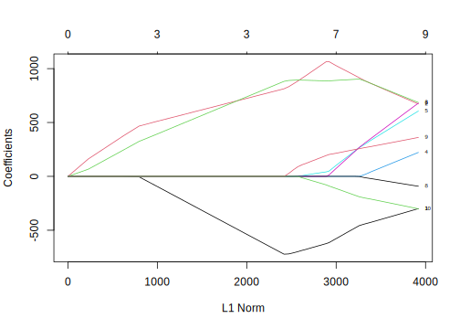
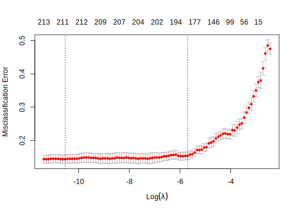
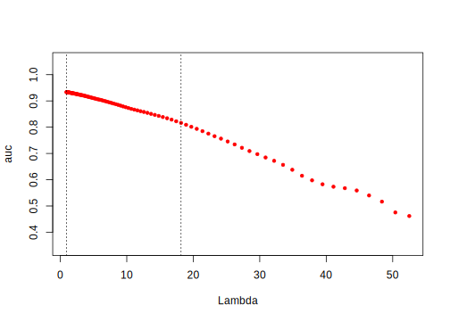

10.4 Penalized Generalized Linear Model
Adding penalties is a general technique that can be applied to many methods other than linear regression. In this section, we will introduce the penalized generalized linear model. It is to fit the generalized linear model by minimizing a penalized maximum likelihood. The penalty can be \(L_1\), \(L_2\) or a combination of the two. The estimates of coefficients minimize the following:
\[\underset{\beta_{0},\mathbf{\beta}}{min}\frac{1}{N}\Sigma_{i=1}^{N}w_{i}l(y_{i},\beta_{0}+\mathbf{\beta^{T}x_{i}})+\lambda[(1-\alpha)\parallel\mathbf{\beta}\parallel_{2}^{2}/2+\alpha\parallel\mathbf{\beta}\parallel_{1}]\]
where
\[l(y_{i},\beta_{0}+\mathbf{\beta^{T}x_{i}})=-log[\mathcal{L}(y_{i},\beta_{0}+\mathbf{\beta^{T}x_{i}})]\]
It is the negative logarithm of the likelihood, \(\mathcal{L}(y_{i},\beta_{0}+\mathbf{\beta^{T}x_{i}})\). Maximize likelihood is to minimize \(l(y_{i},\beta_{0}+\mathbf{\beta^{T}x_{i}})\).
Parameter \(\alpha\) decides the penalty, i.e, between \(L_2\) (\(\alpha=0\)) and \(L_1\) (\(\alpha=1\)). \(\lambda\) controls the weight of the whole penalty item. The higher \(\lambda\) is, the more weight the penalty carries comparing to likelihood. As discussed above, the ridge penalty shrinks the coefficients towards 0 but can’t be exactly 0. The lasso penalty can set 0 estimates so it has the property of feature selection. The elastic net combines both. Here we have two tuning parameters, \(\alpha\) and \(\lambda\).
10.4.1 Introduction to glmnet package
glmnet is a package that fits a penalized generalized linear model using cyclical coordinate descent. It successively optimizes the objective function over each parameter with others fixed, and cycles repeatedly until convergence. Since the linear model is a special case of the generalized linear model, glmnet can also fit a penalized linear model. Other than that, it can also fit penalized logistic regression, multinomial, Poisson, and Cox regression models.
The default family option in the function glmnet() is gaussian. It is the linear regression we discussed so far in this chapter. But the parameterization is a little different in the generalized linear model framework (we have \(\alpha\) and \(\lambda\)). Let’s start from our previous example, using the same training data but glmnet() to fit model:
dat <- read.csv("http://bit.ly/2P5gTw4")
# data cleaning: delete wrong observations with expense < 0
dat <- subset(dat, store_exp > 0 & online_exp > 0)
# get predictors
trainx <- dat[, grep("Q", names(dat))]
# get response
trainy <- dat$store_exp + dat$online_exp
glmfit = glmnet::glmnet(as.matrix(trainx), trainy)The object glmfit returned by glmnet() has the information of the fitted model for the later operations. An easy way to extract the components is through various functions on glmfit, such as plot(), print(), coef() and predict(). For example, the following code visualizes the path of coefficients as penalty increases:
plot(glmfit, label = T)
Each curve in the plot represents one predictor. The default setting is \(\alpha=1\) which means there is only lasso penalty. From left to right, \(L_I\) norm is increasing which means \(\lambda\) is decreasing. The bottom x-axis is \(L_1\) norm (i.e. \(\parallel\mathbf{\beta}\parallel_{1}\)). The upper x-axis is the effective degrees of freedom (df) for the lasso. You can check the detail for every step by:
print(glmfit)Call: glmnet(x = as.matrix(trainx), y = trainy)
Df %Dev Lambda
1 0 0.000 3040
2 2 0.104 2770
3 2 0.192 2530
4 2 0.265 2300
5 3 0.326 2100
6 3 0.389 1910
7 3 0.442 1740
8 3 0.485 1590
9 3 0.521 1450
...The first column Df is the degree of freedom (i.e. the number of non-zero coefficients), %Dev is the percentage of deviance explained and Lambda is the value of tuning parameter \(\lambda\). By default, the function will try 100 different values of \(\lambda\). However, if as \(\lambda\) changes, the %Dev doesn’t change sufficiently, the algorithm will stop before it goes through all the values of \(\lambda\). We didn’t show the full output above. But it only uses 68 different values of \(\lambda\). You can also set the value of \(\lambda\) using s= :
coef(glmfit, s = 1200)## 11 x 1 sparse Matrix of class "dgCMatrix"
## s1
## (Intercept) 2255.2
## Q1 -390.9
## Q2 653.6
## Q3 624.4
## Q4 .
## Q5 .
## Q6 .
## Q7 .
## Q8 .
## Q9 .
## Q10 .When \(\lambda=1200\), there are three coefficients with non-zero estimates(Q1, Q2 and Q3). You can apply models with different values of tuning parameter to new data using predict():
newdat = matrix(sample(1:9, 30, replace = T), nrow = 3)
predict(glmfit, newdat, s = c(1741, 2000))## s1 s2
## [1,] 6004 5968
## [2,] 7101 6674
## [3,] 9158 8411Each column corresponds to a value of \(\lambda\). To tune the value of \(\lambda\), we can easily use cv.glmnet() function to do cross-validation. cv.glmnet() returns the cross-validation results as a list object. We store the object in cvfit and use it for further operations.
cvfit = cv.glmnet(as.matrix(trainx), trainy)We can plot the object using plot(). The red dotted line is the cross-validation curve. Each red point is the cross-validation mean squared error for a value of \(\lambda\). The grey bars around the red points indicate the upper and lower standard deviation. The two gray dotted vertical lines represent the two selected values of \(\lambda\), one gives the minimum mean cross-validated error (lambda.min), the other gives the error that is within one standard error of the minimum (lambda.1se).
plot(cvfit)
You can check the two selected \(\lambda\) values by:
# lambda with minimum mean cross-validated error
cvfit$lambda.min## [1] 12.57# lambda with one standard error of the minimum
cvfit$lambda.1se## [1] 1200You can look at the coefficient estimates for different \(\lambda\) by:
# coefficient estimates for model with the error
# that is within one standard error of the minimum
coef(cvfit, s = "lambda.1se")## 11 x 1 sparse Matrix of class "dgCMatrix"
## s1
## (Intercept) 2255.3
## Q1 -391.1
## Q2 653.7
## Q3 624.5
## Q4 .
## Q5 .
## Q6 .
## Q7 .
## Q8 .
## Q9 .
## Q10 .10.4.2 Penalized logistic regression
10.4.2.1 Multivariate logistic regression model
Logistic regression is a traditional statistical method for a two-category classification problem. It is simple yet useful. Here we use the swine disease breakout data as an example to illustrate the learning method and code implementation. Refer to section 3.2 for more details about the dataset. The goal is to predict if a farm will have a swine disease outbreak (i.e build a risk scoring system).
Consider risk scoring system construction using a sample of \(n\) observations, with information collected for \(G\) categorical predictors and one binary response variable for each observation. The predictors are 120 survey questions (i.e. G=120). There were three possible answers for each question (A, B and C). So each predictor is encoded to two dummy variables (we consider C as the baseline.). Let \(\mathbf{x_{i,g}}\) be the vector of dummy variables associated with the \(g^{th}\) categorical predictor for the \(i^{th}\) observation, where \(i=1,\cdots,n\), \(g=1,\cdots,G\). For example, if the first farm chooses B for question 2, then the corresponding observation is \(\mathbf{x_{12}}=(0,1)^{T}\). Each question has a degree of freedom of 2.
We denote the degrees of freedom of the \(g^{th}\) predictor by \(df_g\), which is also the length of vector \(\mathbf{x_{i,g}}\). Let \(y_i\) (= 1, diseased; or 0, not diseased) be the binary response for the \(i\)th observation. Denote the probability of disease for \(i\)th subject by \(\theta_i\), the model can be formulated as:
\[y_{i}\sim Bounoulli(\theta_{i})\]
\[log\left(\frac{\theta_{i}}{1-\theta_{i}}\right)=\eta_{\mathbf{\beta}}(x_{i})=\beta_{0}+\sum_{g=1}^{G}\mathbf{x_{i,g}}^{T}\mathbf{\beta_{g}}\]
where \(\beta_{0}\) is the intercept and \(\mathbf{\beta_{g}}\) is the parameter vector corresponding to the \(g^{th}\) predictor. As we mentioned, here \(\mathbf{\beta_{g}}\) has length 2.
Traditional estimation of logistic parameters \(\mathbf{\beta}=(\beta_{0}^{T},\mathbf{\beta_{1}}^{T},\mathbf{\beta_{2}}^{T},...,\mathbf{\beta_{G}}^{T})^{T}\) is done through maximizing the log-likelihood
\[\begin{eqnarray*} l(\mathbf{\beta})&=&log[\prod_{i=1}^{n}\theta_{i}^{y_{i}}(1-\theta_{i})^{1-y_{i}}]\\ &=&\sum_{i=1}^{n}\{y_{i}log(\theta_{i})+(1-y_{i})log(1-\theta_{i})\}\\ &=&\sum_{i=1}^{n}\{\ y_{i}\eta_{\mathbf{\beta}}(\mathbf{x_{i}})-log[1+exp(\eta_{\mathbf{\beta}}(\mathbf{x_{i}}))]\ \} \tag{10.4} \end{eqnarray*}\]
For logistic regression analysis with a large number of explanatory variables, complete- or quasi-complete-separation may lead to unstable maximum likelihood estimates as described in (Wedderburn 1976) and (A and J 1984). For example:
library(MASS)
dat <- read.csv("http://bit.ly/2KXb1Qi")
fit <- glm(y~., dat, family = "binomial")## Warning: glm.fit: algorithm did not converge## Warning: glm.fit: fitted probabilities numerically 0 or
## 1 occurredThere is an error saying “algorithm did not converge.” It is because there is complete separation. It happens when there are a large number of explanatory variables which makes the estimation of the coefficients unstable. To stabilize the estimation of parameter coefficients, one popular approach is the lasso algorithm with \(L_1\) norm penalty proposed by Tibshirani (R 1996). Because the lasso algorithm can estimate some variable coefficients to be 0, it can also be used as a variable selection tool.
10.4.2.2 Penalized logistic regression
Penalized logistic regression adds penalty to the likelihood function:
\[ \sum_{i=1}^{n}\{\ y_{i}\eta_{\mathbf{\beta}}(\mathbf{x_{i}})-log[1+exp(\eta_{\mathbf{\beta}}(\mathbf{x_{i}}))]\ \}+\lambda (1-\alpha) \frac{\parallel \mathbf{\beta}\parallel_{2}^{2}}{2} + \alpha \parallel \mathbf{\beta}\parallel _{1} ] \]
dat <- read.csv("http://bit.ly/2KXb1Qi")
trainx = dplyr::select(dat, -y)
trainy = dat$y
fit <- glmnet(as.matrix(trainx), trainy, family = "binomial")The error message is gone when we use penalized regression. We can visualize the shrinking path of coefficients as penalty increases. The use of predict() function is a little different. For the generalized linear model, you can return different results by setting the type argument. The choices are:
link: return the link function valueresponse: return the probabilityclass: return the category (0/1)coefficients: return the coefficient estimatesnonzero: return an indicator for non-zero estimates (i.e. which variables are selected)
The default setting is to predict the probability of the second level of the response variable. For example, the second level of the response variable for trainy here is “1”:
levels(as.factor(trainy))## [1] "0" "1"So the model is to predict the probability of outcome “1”. Take a baby example of 3 observations and 2 values of \(\lambda\) to show the usage of predict() function:
newdat = as.matrix(trainx[1:3, ])
predict(fit, newdat, type = "link", s = c(2.833e-02, 3.110e-02))## s1 s2
## 1 0.1943 0.1443
## 2 -0.9913 -1.0077
## 3 -0.5841 -0.5496The first column of the above output is the predicted link function value when \(\lambda = 0.02833\). The second column of the output is the predicted link function when \(\lambda = 0.0311\).
Similarly, you can change the setting for type to produce different outputs. You can use the cv.glmnet() function to tune parameters. The parameter setting is nearly the same as before, the only difference is the setting of type.measure. Since the response is categorical, not continuous, we have different performance measurements. The most common settings of type.measure for classification are:
class: error rateauc: it is the area under the ROC for the dichotomous problem
For example:
cvfit = cv.glmnet(as.matrix(trainx), trainy,
family = "binomial", type.measure = "class")
plot(cvfit)
The code above uses error rate as performance criteria and use 10-fold cross-validation. Similarly, you can get the \(\lambda\) value for the minimum error rate and the error rate that is 1 standard error from the minimum:
cvfit$lambda.min## [1] 2.643e-05cvfit$lambda.1se## [1] 0.003334You can use the same way to get the parameter estimates and make prediction.
10.4.2.3 Group lasso logistic regression
For models with categorical survey questions (explanatory variables), however, the original lasso algorithm only selects individual dummy variables instead of sets of the dummy variables grouped by the question in the survey. Another disadvantage of applying lasso to grouped variables is that the estimates are affected by the way dummy variables are encoded. Thus the group lasso (Yuan and Lin 2007) method has been proposed to enable variable selection in linear regression models on groups of variables, instead of on single variables. For logistic regression models, the group lasso algorithm was first studied by Kim et al. (Y. Kim and Kim 2006). They proposed a gradient descent algorithm to solve the corresponding constrained problem, which does, however, depend on unknown constants. Meier et al. (L Meier and Buhlmann 2008) proposed a new algorithm that could work directly on the penalized problem and its convergence property does not depend on unknown constants. The algorithm is especially suitable for high-dimensional problems. It can also be applied to solve the corresponding convex optimization problem in generalized linear models. The group lasso estimator proposed by Meier et al. (L Meier and Buhlmann 2008) for logistic regression has been shown to be statistically consistent, even with a large number of categorical predictors.
In this section, we illustrate how to use the logistic group lasso algorithm to construct risk scoring systems for predicting disease. Instead of maximizing the log-likelihood in the maximum likelihood method, the logistic group lasso estimates are calculated by minimizing the convex function:
\[ S_{\lambda}(\mathbf{\beta})=-l(\mathbf{\beta})+\lambda\sum_{g=1}^{G}s(df_{g})\parallel\mathbf{\beta_{g}}\parallel_{2} \]
where \(\lambda\) is a tuning parameter for the penalty and \(s(\cdot)\) is a function to rescale the penalty. In lasso algorithms, the selection of \(\lambda\) is usually determined by cross-validation using data. For \(s(\cdot)\), we use the square root function \(s(df_g)=df_g^{0.5}\) as suggested in Meier et al.(L Meier and Buhlmann 2008). It ensures the penalty is of the order of the number of parameters \(df_g\) as used in (Yuan and Lin 2007).
Here we consider selection of the tuning parameter \(\lambda\) from a multiplicative grid of 100 values \(\{0.96\lambda_{max},0.96^{2}\lambda_{max},0.96^{3}\lambda_{max},...,0.96^{100}\lambda_{max}\}\). Here \(\lambda_{max}\) is defined as
\[\begin{equation} \lambda_{max}=\underset{g\in\{1,...,G\}}{max}\left\{\frac{1}{s(df_{g})}\parallel \mathbf{x_{g}}^{T}(\mathbf{y}-\bar{\mathbf{y}} )\parallel_{2}\right\}, \end{equation}\]
such that when \(\lambda=\lambda_{max}\), only the intercept is in the model. When \(\lambda\) goes to \(0\), the model is equivalent to ordinary logistic regression.
Three criteria may be used to select the optimal value of \(\lambda\). One is AUC which you should have seem many times in this book by now. The log-likelihood score used in Meier et al. (L Meier and Buhlmann 2008) is taken as the average of log-likelihood of the validation data over all cross-validation sets. Another one is the maximum correlation coefficient in Yeo and Burge (Yeo and Burge 2004) that is defined as:
\[ \rho_{max}=max\{\rho_{\tau}|\tau\in(0,1)\}, \]
where \(\tau\in(0,1)\) is a threshold to classify the predicted probability into binary disease status and \(\rho_\tau\) is the Pearson correlation coefficient between the true binary disease status and the predictive disease status with threshold \(\tau\).
You can use the following package to implement the model. Install the package using:
devtools::install_github("netlify/NetlifyDS")Load the package:
library("NetlifyDS")The package includes the swine disease breakout data and you can load the data by:
data("sim1_da1")You can use cv_glasso() function to tune the parameters:
# the last column of sim1_da1 response variable y
# trainx is the explanatory variable matrix
trainx = dplyr::select(sim1_da1, -y)
# save response variable as as trainy
trainy = sim1_da1$y
# get the group indicator
index <- gsub("\\..*", "", names(trainx))Dummy variables from the same question are in the same group:
index[1:50]## [1] "Q1" "Q1" "Q2" "Q2" "Q3" "Q3" "Q4" "Q4"
## [9] "Q5" "Q5" "Q6" "Q6" "Q7" "Q7" "Q8" "Q8"
## [17] "Q9" "Q9" "Q10" "Q10" "Q11" "Q11" "Q12" "Q12"
## [25] "Q13" "Q13" "Q14" "Q14" "Q15" "Q15" "Q16" "Q16"
## [33] "Q17" "Q17" "Q18" "Q18" "Q19" "Q19" "Q20" "Q20"
## [41] "Q21" "Q21" "Q22" "Q22" "Q23" "Q23" "Q24" "Q24"
## [49] "Q25" "Q25"Set a series of tuning parameter values. nlam is the number of values we want to tune. It is the parameter \(m\) in \(\{0.96\lambda_{max},0.96^{2}\lambda_{max},0.96^{3}\lambda_{max},...,0.96^{m}\lambda_{max}\}\). The tuning process returns a long output and we will not report all:
# Tune over 100 values
nlam <- 100
# set the type of prediction
# - `link`: return the predicted link function
# - `response`: return the predicted probability
# number of cross-validation folds
kfold <- 10
cv_fit <- cv_glasso(trainx, trainy,
nlam = nlam, kfold = kfold, type = "link")
# only show part of the results
str(cv_fit)Here we only show part of the output:
...
$ auc : num [1:100] 0.573 0.567 0.535 ...
$ log_likelihood : num [1:100] -554 -554 -553 ...
$ maxrho : num [1:100] -0.0519 0.00666 ...
$ lambda.max.auc : Named num [1:2] 0.922 0.94
..- attr(*, "names")= chr [1:2] "lambda" "auc"
$ lambda.1se.auc : Named num [1:2] 16.74 0.81
..- attr(*, "names")= chr [1:2] "" "se.auc"
$ lambda.max.loglike: Named num [1:2] 1.77 -248.86
..- attr(*, "names")= chr [1:2] "lambda" "loglike"
$ lambda.1se.loglike: Named num [1:2] 9.45 -360.13
..- attr(*, "names")= chr [1:2] "lambda" "se.loglike"
$ lambda.max.maxco : Named num [1:2] 0.922 0.708
..- attr(*, "names")= chr [1:2] "lambda" "maxco"
$ lambda.1se.maxco : Named num [1:2] 14.216 0.504
..- attr(*, "names")= chr [1:2] "lambda" "se.maxco"In the returned results:
$ auc: the AUC values$ log_likelihood: log-likelihood$ maxrho: maximum correlation coefficient$ lambda.max.auc: the max AUC and the corresponding value of \(\lambda\)$ lambda.1se.auc: one standard error to the max AUC and the corresponding \(\lambda\)$ lambda.max.loglike: max log-likelihood and the corresponding \(\lambda\)$ lambda.1se.loglike: one standard error to the max log-likelihood and the corresponding \(\lambda\)$ lambda.max.maxco: maximum correlation coefficient and the corresponding \(\lambda\)$ lambda.1se.maxco: one standard error to the maximum correlation coefficient and the corresponding \(\lambda\)
The most common criterion is AUC. You can compare the selections from different criteria. If they all point to the same value of the tuning parameter, you can have more confidence about the choice. If they suggest very different values, then you need to concern if the tuning process is stable. You can visualize the cross validation result:
plot(cv_fit)
The x-axis is the value of the tuning parameter, the y-axis is AUC. The two dash lines are the value of \(\lambda\) for max AUC and the value for the one standard deviation to the max AUC. Once you choose the value of the tuning parameter, you can use fitglasso() to fit the model. For example, we can fit the model using the parameter value that gives the max AUC, which is \(\lambda=0.922\):
fitgl <- fitglasso(trainx, trainy,
lambda = 0.922, na_action = na.pass)Lambda: 0.922 nr.var: 229You can use coef() to get the estimates of coefficients:
coef(fitgl) 0.922
Intercept -5.318e+01
Q1.A 1.757e+00
Q1.B 1.719e+00
Q2.A 2.170e+00
Q2.B 6.939e-01
Q3.A 2.102e+00
Q3.B 1.359e+00
...Use predict_glasso() to predict new samples:
prey <- predict_glasso(fitgl, trainx)